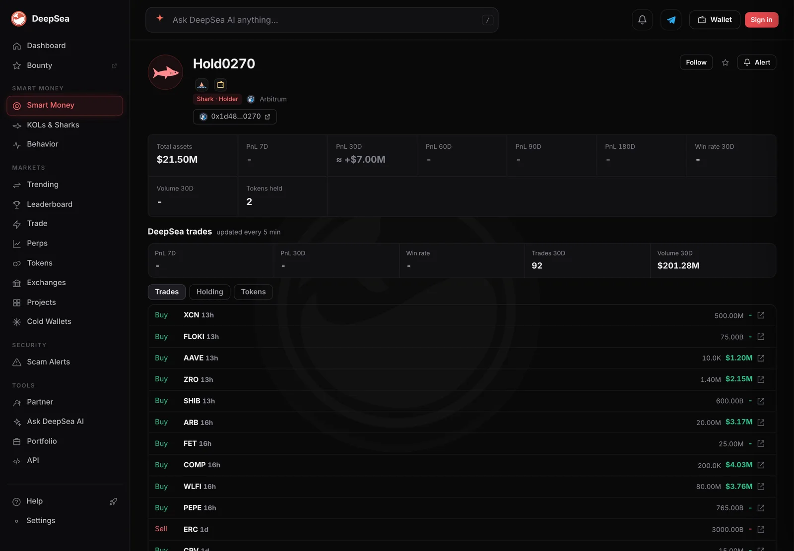

ARB fell 8% after one wallet's $3.17 million buy. Shorts now pay on 79% of its futures bets
Sharks bought $3.65 million of Arbitrum's ARB in a day and sold $9,135, DeepSea's data show. The price kept sliding, and on most futures markets traders betting on a fall now pay those betting on a rise.
Key points
- ARB traded at $0.1481 at 6:49 a.m. ET on November 12, 2026, down 8.3% in 24 hours and 19.7% in 30 days, CoinGecko data show.
- DeepSea counted $3,653,779 of ARB bought by 5 shark wallets on Arbitrum in 24 hours, against $9,135 sold. One trade of $3,172,039 made up 87% of the buying.
- At 7:00 a.m. ET, funding was negative on 40 of 75 ARB perpetual futures on CoinGecko's list. Those 40 hold $182.6 million, or 79%, of the $232.2 million in open bets.
 What DeepSea's data shows
What DeepSea's data shows
DeepSea's 24-hour flow table, built at 6:44 a.m. ET, still puts ARB at the top of shark buying for every chain it tracks: $3,653,779 bought and $9,135 sold on Arbitrum, by 5 wallets in 16 trades. Sharks are large, active wallets that DeepSea follows.
Most of it is one trade. The wallet ending in 0270 shows $3,172,039 bought in a single trade and nothing sold. Our earlier story read its DeepSea page as a buy of 20.00 million ARB, about $0.159 a token. The next biggest Arbitrum buyer, a wallet ending in 116d, bought $699,991 of tokens in 5 trades, with no sales.

Data: DeepSea (desea.io), checked November 12, 2026, 6:44 a.m. ET.
What moved
Arbitrum's ARB token traded at $0.1481 at 6:49 a.m. ET on November 12, 2026, according to CoinGecko. That is 8.3% lower than a day earlier, 9.4% lower over seven days and 19.7% lower over 30 days. The 24-hour high was $0.1626.
CoinGecko's hourly prices show the slide picked up on Wednesday afternoon. ARB was near $0.1592 at 3 p.m. ET on November 11, around the time our earlier story placed the big buy, and $0.1517 four hours later. It has not recovered since.
The buyer is down on paper
If the wallet ending in 0270 still holds the 20.00 million ARB, those tokens are worth about $2.96 million at the 6:49 a.m. price, roughly $210,000 less than it paid. DeepSea's flow table shows no ARB sales by sharks large enough to change that, but we could not confirm the wallet's current balance on a block explorer for this story, so treat the paper loss as an estimate.
Who owns the wallet is unknown. DeepSea's page gives it only an automatic name, Hold0270, and its realized profit table has no closed trades for it.

Futures traders lean the other way
Perpetual futures let traders bet on ARB's price with no end date. Every few hours a small fee called funding changes hands between the two sides. Negative funding means the short side, which profits if the price drops, pays the long side. That is a sign shorts are the busier side.
CoinGecko's derivatives data, read at 7:00 a.m. ET, listed 75 ARB perpetuals with $232.2 million of open bets and $439.8 million of trading in a day. Funding was negative on 40 of them, positive on 31 and zero on 4. The negative ones hold $182.6 million, or 79% of all open ARB bets.
XT.COM had the most open bets, $50.0 million, at minus 0.0078%. Binance had $38.5 million, also at minus 0.0078%. On Hyperliquid, an onchain futures exchange, ARB funding was minus 0.0014% per hour on $5.74 million of open bets.
Open ARB futures bets by venue, November 12, 2026
US$ million
Source: CoinGecko derivatives API, read November 12, 2026, 7:00 a.m. ET
LC Insight analysis
This section is our reading of the facts above, not a statement of fact.
- We think the gap is the story: DeepSea records one large wallet putting $3.17 million into ARB, while most of the futures market is positioned for further weakness.
- Negative funding has a cost for shorts. If ARB stops falling, shorts who are paying may close their bets, which means buying ARB back.
- A single buyer is a thin signal. Four other shark wallets on Arbitrum added only about $480,000 between them.
What's next
- Whether the 0270 wallet moves or sells its ARB
- ARB against its 24-hour low near $0.148
- The share of open ARB futures bets with negative funding, now 79%
- More shark buying of ARB on DeepSea's flow table
Disclaimer. This article is based on public information and the sources listed below as of the update time shown. It is for information only and is not investment, legal or tax advice. Figures may change as companies and authorities publish new data.
Sources
- DeepSea, live flows by token and wallet, 24 hours (read November 12, 2026, 6:44 a.m. ET)
- DeepSea, realized PnL table, 7 and 30 days (read November 12, 2026, 6:45 a.m. ET)
- CoinGecko API, Arbitrum (ARB) price, ranges and 2-day hourly chart (read November 12, 2026, 6:49 a.m. ET)
- CoinGecko API, derivatives markets, all ARB perpetuals (read November 12, 2026, 7:00 a.m. ET)
- CoinGecko, Arbitrum (ARB) price page